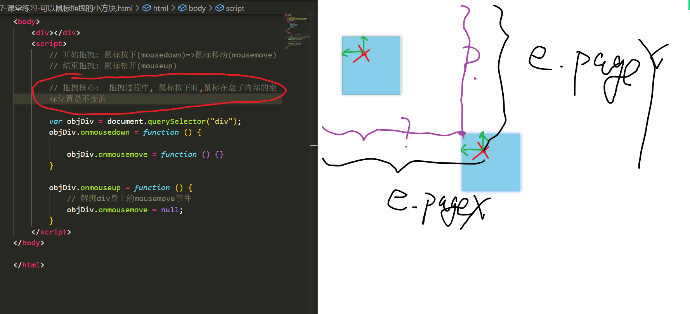

# 三大家族
- js 三大家族指的是 offset、scroll 和 client 这三个属性集合，它们都可以用来获取或设置元素的尺寸、位置和滚动等信息
- offset 家族主要用于获取元素自身的宽度、高度和相对于第一个有定位的父元素的偏移量，包括内容、边框和内边距
- scroll 家族主要用于获取或设置元素的滚动条位置和滚动区域的宽度、高度，包括内容和内边距
- client 家族主要用于获取元素可视区域的宽度、高度和相对于浏览器窗口的偏移量，包括内容和内边距
# 三大家族属性
Offset 属性包括 offsetWidth、offsetHeight、offsetLeft 和 offsetTop，它们分别表示元素自身的宽度和高度（包括内容、边框和内边距），以及元素距离第一个有定位的父级元素左边和上边的距离（如果没有定位父级，则以 body 为准）。
- dom 对象.offsetParent 返回距离当前 dom 对象最近的非静态定位父辈元素对应的 dom 对象，如果父辈元素都是静态定位，将返回 body 元素
- dom 对象.offsetHeight 返回 width + 上下 padding + 上下 border
- dom 对象.offsetWidth 返回 width + 左右 padding + 左右 border
- dom 对象.offsetTop 返回当前 dom 对象距离 offsetParent 元素的上方偏移距离
- dom 对象.offsetLeft 返回当前 dom 对象距离 offsetParent 元素的左方偏移距离
Scroll 属性包括 scrollWidth、scrollHeight、scrollLeft 和 scrollTop，它们分别表示元素内容的宽度和高度（包括溢出部分），以及元素内容被卷起来的左边和上边的距离。
Client 属性包括 clientWidth、clientHeight、clientLeft 和 clientTop，它们分别表示元素可见部分的宽度和高度（不包括边框），以及元素边框的左边和上边的厚度。
- clientWidth 的实际宽度：
- dom 对象.clientwidth = width+ 左右 padding
- clientHeight 的实际高度：
- dom 对象.clientHeight = height + 上下 padding
- clientTop 的实际宽度：
- dom 对象.clientTop = border.top (上边框的宽度)
- clientLeft 的实际宽度：
- dom 对象.clientLeft = border.left (左边框的宽度)
- clientWidth 的实际宽度：
这些属性只能用于获取不能用于设置，获取到的是不带单位的数值
示例代码：
使用 offsetWidth 和 offsetHeight 获取元素自身的宽度和高度，然后根据它们设置元素的样式或动画效果。例如：
// 获取一个 div 元素var div = document.getElementById("div");
// 获取它的宽度和高度var width = div.offsetWidth;
var height = div.offsetHeight;
// 根据它们设置 div 的背景颜色if(width > 100 && height > 100){
div.style.backgroundColor = "green";
}else{
div.style.backgroundColor = "red";
}使用 offsetLeft 和 offsetTop 获取元素距离第一个有定位的父级元素左边和上边的距离，然后根据它们设置元素的位置或移动效果。例如：
// 获取一个 img 元素var img = document.getElementById("img");
// 获取它距离父级元素左边和上边的距离var left = img.offsetLeft;
var top = img.offsetTop;
// 根据它们设置 img 的位置，使其向右下角移动 10pximg.style.left = (left + 10) + "px";
img.style.top = (top + 10) + "px";
使用 scrollWidth 和 scrollHeight 获取元素内容的宽度和高度，然后根据它们判断是否需要添加滚动条或显示更多内容。例如：
// 获取一个 ul 元素var ul = document.getElementById("ul");
// 获取它内容的宽度和高度var scrollWidth = ul.scrollWidth;
var scrollHeight = ul.scrollHeight;
// 判断是否需要添加水平滚动条或垂直滚动条if(scrollWidth > ul.clientWidth){
ul.style.overflowX = "scroll";
}else{
ul.style.overflowX = "hidden";
}if(scrollHeight > ul.clientHeight){
ul.style.overflowY = "scroll";
}else{
ul.style.overflowY = "hidden";
}使用 scrollLeft 和 scrollTop 获取元素内容被卷起来的左边和上边的距离，然后根据它们实现滚动效果或返回顶部功能。例如：
// 获取一个 div 元素var div = document.getElementById("div");
// 给 div 添加一个点击事件，当点击时返回顶部div.onclick = function(){
// 使用定时器实现平滑滚动效果var timer = setInterval(function(){
// 每隔 10 毫秒，让 div 内容向上滚动 10px，直到为 0 为止var scrollTop = div.scrollTop;
if(scrollTop > 0){
div.scrollTop -= 10;
}else{
// 清除定时器并退出函数clearInterval(timer);
return;
}},10);
};
使用 clientWidth 和 clientHeight 获取元素可见部分的宽度和高度，然后根据它们实现自适应布局或响应式设计。例如：
// 获取浏览器窗口可视区域的大小（兼容写法）var clientWidth = window.innerWidth || document.documentElement.clientWidth || document.body.clientWidth;
var clientHeight= window.innerHeight || document.documentElement.clientHeight || document.body.clientHeight;
// 根据窗口大小调整页面布局（简单示例）if(clientWidth < 768){
// 如果窗口小于 768px，则使用移动端布局（假设有一个 mobile.css 文件）var link= document.createElement("link");
link.rel= "stylesheet";
link.href= "mobile.css";
}else{
// 如果窗口大于等于 768px，则使用桌面端布局（假设有一个 desktop.css 文件）var link= document.createElement("link");
link.rel= "
# 三大家族的应用场景
使用 Offset 属性可以实现拖拽效果、放大镜效果、吸顶效果等。
拖拽效果代码示例

let div = document.querySelector(".box")
div.addEventListener("mousedown", function down(e) {
let startX = e.offsetX
let startY = e.offsetY
document.onmousemove = function move(event) {
let divLeft = event.pageX - startX
let divTop = event.pageY - startY
div.style.left = `${divLeft}px`
div.style.top = `${divTop}px`
}})
div.addEventListener("mouseup", function up() {
document.onmousemove = null
})
使用 Scroll 属性可以实现滚动条监听、返回顶部、无限加载等。
使用 Client 属性可以实现鼠标跟随、自适应布局、弹出层居中等。